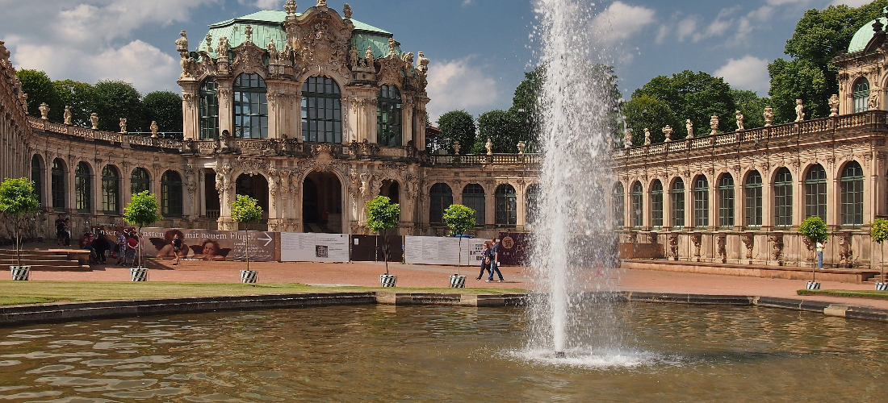
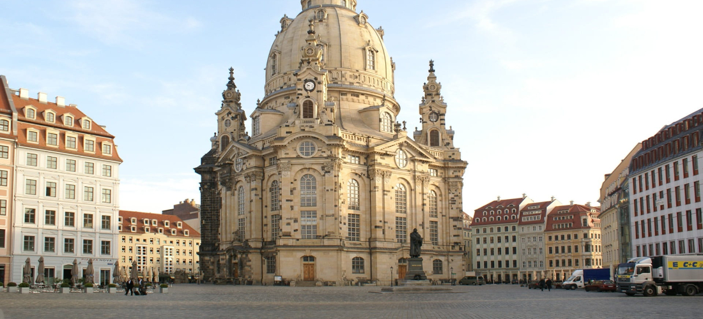
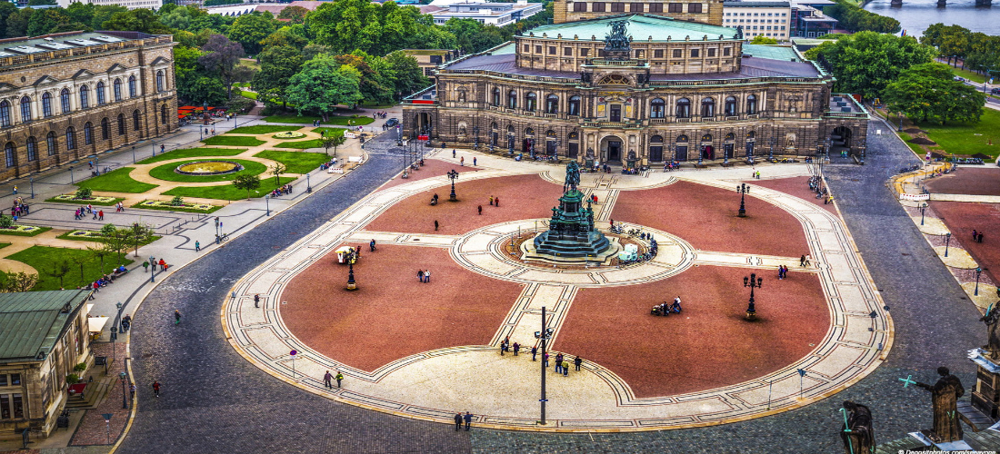
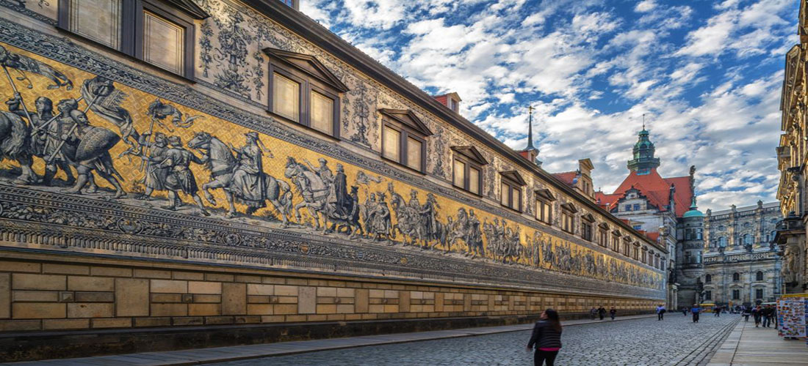
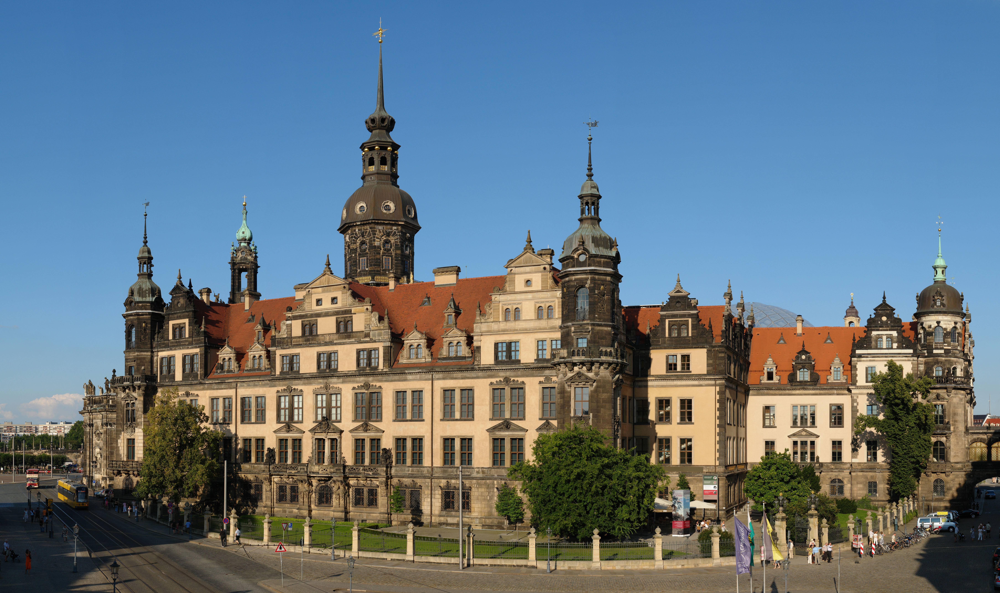
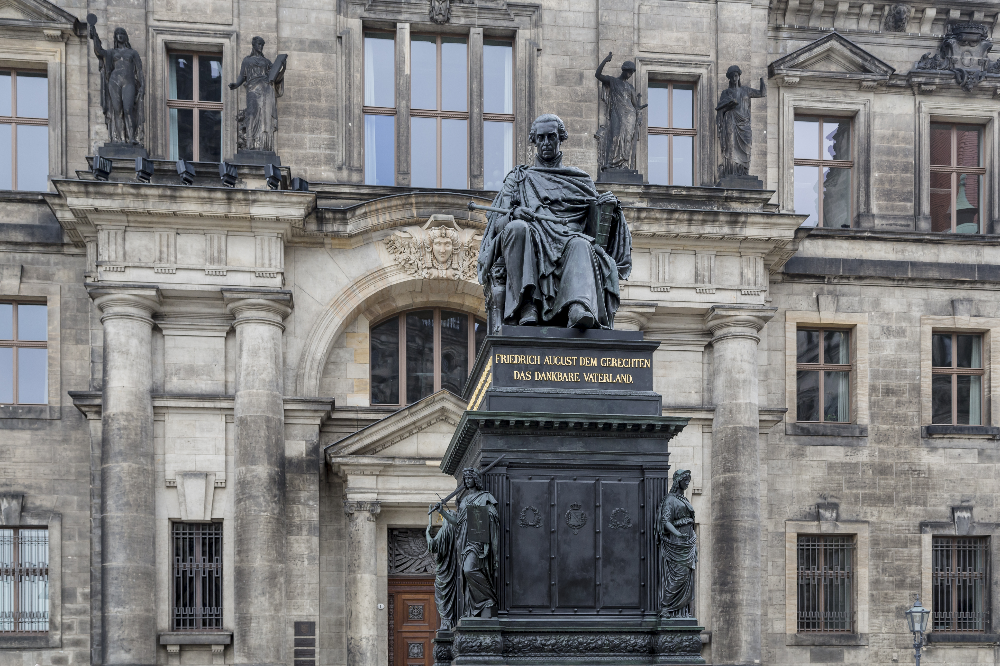
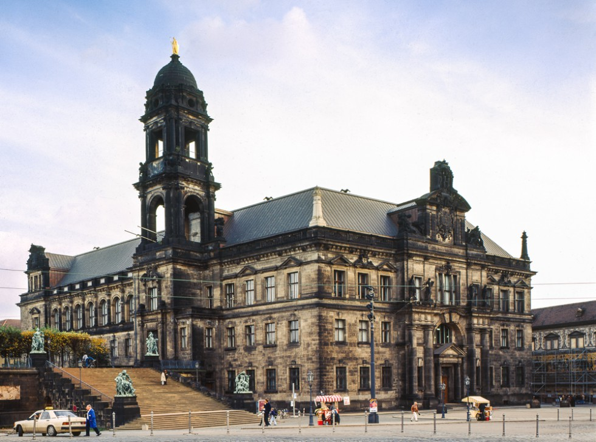

Zwinger Sarayı, Dr esden şehrinde bulunan bir tarihi bina ve müze alanıdır. Zwinger Sarayı, Almanya'nın Sachsen eyaletinde yer almaktadır ve şehir merkezine yakındır. Zwinger Sarayı, Barok dönemine ait bir yapıdır ve şehrin turistik önemli yerlerinden biridir. Zwinger Sarayı, farklı tarihi dönemlerden kalma sanat eserleri, tarihi objeler ve müzeler ile doludur. Saray, ayrıca, çeşitli konserler, sergiler ve diğer etkinliklerin düzenlendiği bir alandır.
Zwinger Sarayı, Bar ok dönemde yapılmıştır. Saray, 1711-1728 yılları arasında yapılmıştır ve Dresden şehrinin ünlü mimarı Matthäus Daniel Pöppelmann tarafından tasarımı yapılmıştır. Zwinger Sarayı, ortaç ağ İslam sanatından ilham alınarak yapılmıştır ve bu yüzden büyüleyici bir yapıdır. Saray, aynı zamanda, Barok döneminde Almanya'da yapılmış en önemli yapılardan biridir ve Dresden şehrinin simgesidir.
Dünyanın en büyük antik kale kompleksi konumunda bulunan Prag Kalesi, yıllar içinde inşa edilmiş olan farklı mimari tarzdaki muhteşem tarihi binaları, kiliseleri ve diğer yapıları ile şehrin en turistik noktalarının kesinlikle en başında gelmektedir. Kaleyi tam anlamıyla gezebilmek için hatırı sayılır bir zaman dilimini ayırmanız gerektiğini de belirtelim.
| Normal | : | 14 € |
|---|---|---|
| İndirimli | : | 10,50 € |
| 17 Yaş Altı | : | Ücretsiz |
| Grup | : | 12,50 € |

Frauenkirche (Kadınlar Kilisesi), Dresden şehrinde, Almanya'da bulunan bir luter kilisesidir. Kilise, 1726-1743 yılları arasında yapılmış ve barok tarzında inşa edilmiştir. Frauenkirche, Dresden'in simgesi olmuş ve şehrin en önemli turistik yerlerinden biridir.
Frauenkirche, Dresden şehrinin ortasında yer almaktadır ve şehrin en yüksek yapısıdır. Kilisenin önünde bulunan Neumarkt Meydanı da turistler tarafından ziyaret edilen yerler arasındadır. Kilise, 2. Dünya Savaşı sırasında yıkılmış, ancak 1993-2005 yılları arasında restore edilmiştir.
Frauenkirche, barok tarzının en iyi örneklerinden biridir ve gösterişli iç tasarımı ile ünlüdür. Kilise, Luter mezhebine göre inşa edilmiştir ve günümüzde de Luter mezhebine uygun olarak hizmet vermektedir. Frauenkirche, Dresden şehrinin turistik yerleri arasında önemli bir yere sahiptir ve şehrin simgesi olmuştur.

Semperoper, Dresden şehrinde, Almanya'da bulunan bir operadır. Operanın adı, inşaatı sırasında kullanılan ahşap yapının Semper tarafından tasarlandığından dolayı verilmiştir. Operanın yapımı 1838-1841 yılları arasında tamamlanmış ve barok tarzında inşa edilmiştir.
Semperoper, Almanya'nın en önemli operalarından biridir ve turistler tarafından sıklıkla ziyaret edilmektedir. Operanın iç tasarımı gösterişlidir ve güzel bir orkestra sektionu vardır. Operada yıl boyunca çeşitli operalar, baletler ve konserler düzenlenmektedir.
Semperoper, Dresden şehrinin turistik yerleri arasında önemli bir yere sahiptir ve barok tarzının en güzel örneklerinden biridir. Operada yıl boyunca çeşitli etkinlikler düzenlenmektedir ve turistler tarafından sıklıkla ziyaret edilmektedir.

Schloss Pillnitz, Dresden şehrinin güneyinde, Almanya'da bulunan bir barok tarzı saraydır. Saray, 1720-1723 yılları arasında yapılmış ve Augustus II. tarafından zevk için inşa ettirilmiştir. Saray, Elbe Nehri'nin kıyısında yer almaktadır ve şehrin en önemli turistik yerlerinden biridir.
Schloss Pillnitz, barok tarzının en iyi örneklerinden biridir ve büyüleyici bahçesi ile ünlüdür. Sarayın bahçesi, çeşitli bitki türleri ile düzenlenmiştir ve turistler tarafından sıklıkla ziyaret edilmektedir. Saray, günümüzde müze olarak kullanılmaktadır ve ziyaretçilere, Augustus II.'nin zamanında yaşamış olduğu ortamı göstermektedir.
Schloss Pillnitz, Dresden şehrinin turistik yerleri arasında önemli bir yere sahiptir ve barok tarzının en güzel örneklerinden biridir. Sarayın bahçesi, turistler tarafından sıklıkla ziyaret edilen yerler arasındadır ve saray, günümüzde müze olarak kullanılmaktadır.

Fürstenzug, Dresden şehrinde, Almanya'da bulunan bir duvar resmidir. Resim, Augustus II.'nin önünde bulunan Augustusbrücke Köprüsü'nün doğu tarafında yer almaktadır ve şehrin simgesi olmuştur. Resim, 23.5 metre uzunluğunda ve 10.9 metre yüksekliğindedir ve 105 adet çini plakadan oluşmaktadır.
Fürstenzug, 1871-1876 yılları arasında yapılmış ve Augustus II.'nin önünde bulunan Augustusbrücke Köprüsü'nün doğu tarafına yerleştirilmiştir. Resim, Augustus II.'nin zamanında Almanya'da bulunan tüm kralların resimlerinin yer aldığı bir duvar resmidir.
Fürstenzug, Dresden şehrinin turistik yerleri arasında önemli bir yere sahiptir ve şehrin simgesi olmuştur. Resim, Augustus II.'nin zamanında Almanya'da bulunan tüm kralların resimlerinin yer aldığı bir duvar resmidir ve turistler tarafından sıklıkla ziyaret edilmektedir.

Royal Palace (Residenzschloss) Almanya'da Dresden şehrinde bulunan bir Barok saraydır. Saxony'nin seçkin ve krallarının resmi yerleşkesi olarak inşa edilmiştir. Saray 18. yüzyılda inşa edilmiş ve Dresden'in en önemli yapılarından biri olarak kabul edilir. Saray, şehrin merkezinde, Theaterplatz meydanında yer almaktadır.
Saray, Gemäldegalerie Alte Meister (Eski Ustalar Resim Galerisi) ve Grünes Gewölbe (Yeşil Hol) gibi önemli turistik yerleri içermektedir. Eski Ustalar Resim Galerisi, Raphael, Titian ve Rembrandt gibi ünlü Avrupalı sanatçıların resimlerini içeren büyük bir koleksiyona sahiptir. Yeşil Hol ise, mücevherler, değerli taşlar ve diğer değerli nesnelerin bulunduğu bir hazine odasıdır.
Royal Palace (Residenzschloss), ziyarete açık ve bilet satın alarak ziyaret edilebilir. Ayrıca, rehberli turlar da mevcuttur.
| Normal | : | 14 € |
|---|---|---|
| İndirimli | : | 10,50 € |
| 17 Yaş Altı | : | Ücretsiz |
| Grup | : | 12,50 € |

Frederick Augustus I of Saxony Monument, Almanya'nın Dresden şehrinde bulunan bir anıttır. Frederick Augustus I, Saxony Eyaleti'nin ilk kralıdır ve Almanya'nın ilk konservatif monarşisi olarak bilinir. Anıt, kralın ölümünün 100. yılında, 1827 yılında yaptırılmıştır ve Dresden Neumarkt meydanında yer almaktadır.
Anıt, bronzdan yapılmıştır ve kralın resmi bir heykeli bulunmaktadır. Ayrıca, anıtın altında, kralın ölüm tarihi ve yılı yazılıdır. Anıt, Dresden halkı tarafından oldukça sevilen ve saygı duyulan bir yerdir.

Sächsisches Ständehaus (Saxony State House), Almanya'nın Dresden şehrinde bulunan bir yapıdır. Ständehaus, 19. yüzyılda yaptırılmış ve Saxony eyaleti parlamentosu için kullanılmıştır. Yapı, neoklasik tarzda inşa edilmiştir ve şehrin merkezinde, Altmarkt meydanında yer almaktadır.
Sächsisches Ständehaus, günümüzde kültürel etkinliklerin yapıldığı bir yerdir. Ayrıca, yapının altında, bir çok mağaza ve restoran bulunmaktadır.

Japanisches Palais (Japanese Palace) Almanya'nın Dresden şehrinde bulunan bir yapıdır. Yapı, 18. yüzyılda yaptırılmış ve Saxony eyaletinin son seçkini olan Friedrich August III tarafından kullanılmıştır. Japanisches Palais, şehrin merkezinde, Ostra-Ufer üzerinde yer almaktadır.
apanisches Palais, Japon tarzında inşa edilmiştir ve bir çok Japon detayı içermektedir. Yapının içinde, Saxony Eyalet Müzesi (Staatliches Museum für Völkerkunde) bulunmaktadır. Müze, dünya kültürlerine ait eserleri ve nesneleri sergilemektedir.
Japanisches Palais, ziyarete açık ve bilet satın alarak ziyaret edilebilir. Ayrıca, rehberli turlar da mevcuttur.